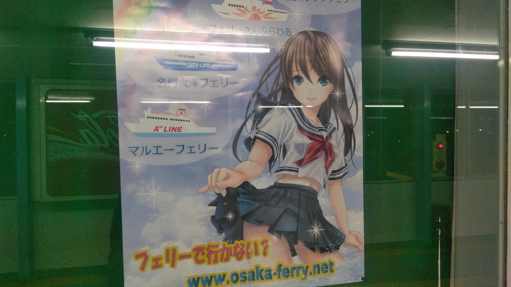
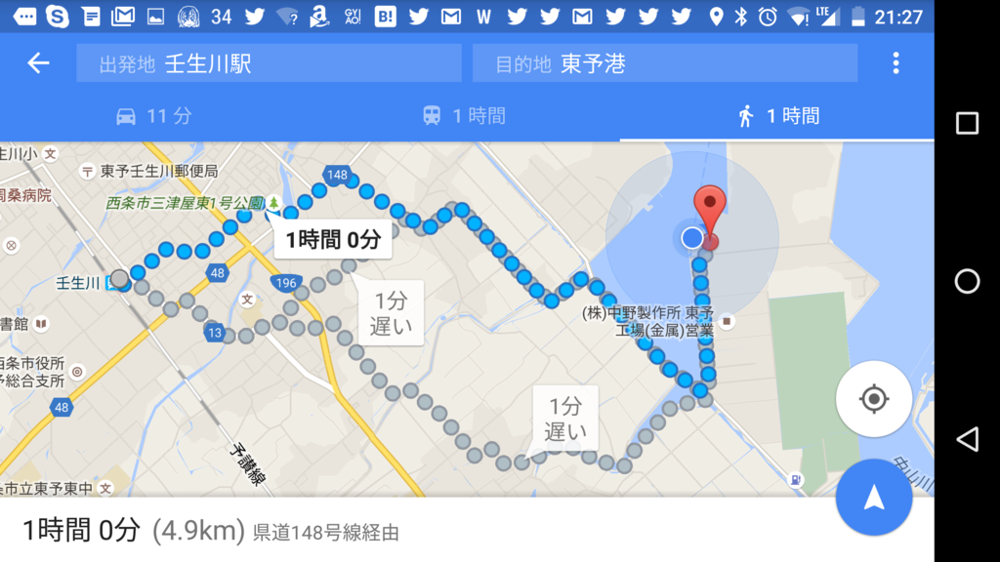
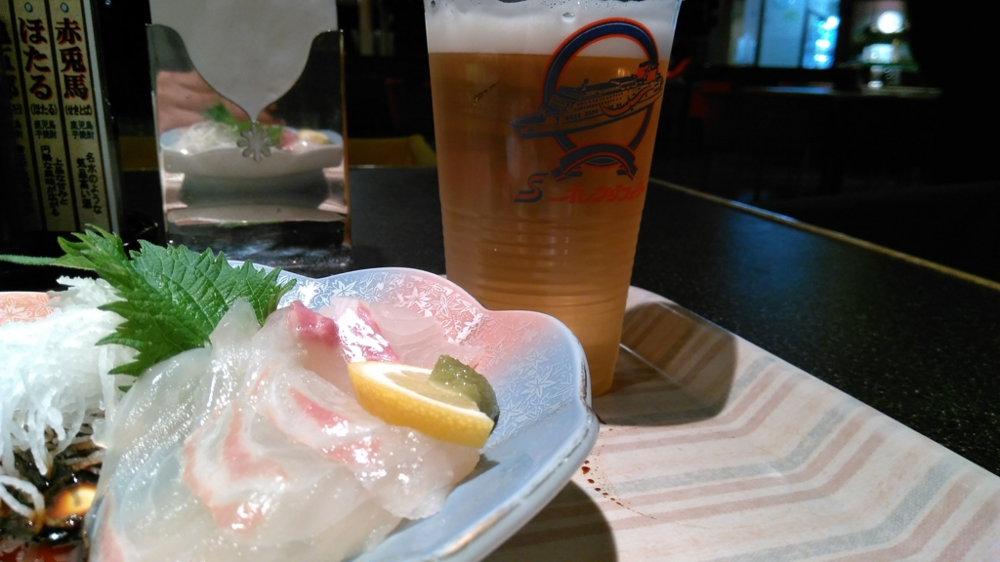
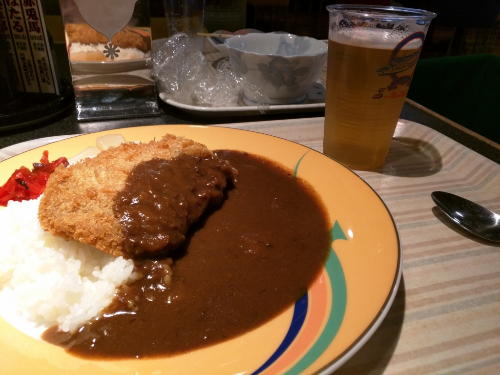
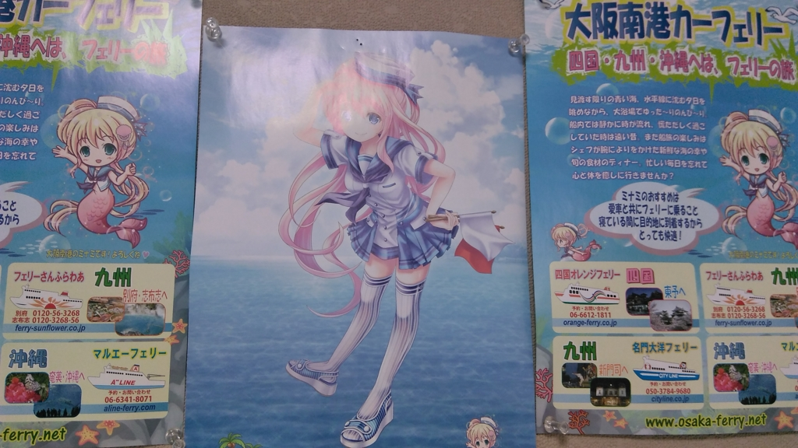

壬生川駅から東予港まで歩くのは正直お勧めしない
公開日：

週末は墓参りと Windows Insider Meetup 参加のため、船で大阪へ行った。南港 → 東予港 は何回か経験があるのだけど、その逆は実は初めてだったりする。なぜならば不便だからだ。
連絡バス
東予港の最寄り駅は壬生川駅（関西人だと“みぶかわ”と読んでしまいがちだが、“にゅうがわ”と読む）だが、駅～港間に路線バスはないようで、タクシーを使うか、連絡バスを利用する必要がある。

中予～東予港間の場合、連絡バスは3つ用意されているようだ。
- 伊予鉄バス（JR 松山駅～東予港）：22:10着（要予約。有料、松山から 1,230円）
- せとうちバス
- 小松総合支所前～東予港：20:21着（無料）
- 今治営業所～今治駅前～壬生川駅前～東予港：21:53着（無料）
- 新居浜駅前～西条駅前～氷見～小松総合支所～東予港：21:14着（無料）
ジモティー（※説明しよう、地元の人の意である）にはわかりやすいのかもしれんが、俺には仕組みがさっぱりわからん。そもそも小松総合支所前ってどこや……今治駅前からの路線バス（有料）でたどり着けるらしいが、JR の駅には接続していないのか？ 営業所そのものは玉之江駅と伊予氷見駅の間にあるらしいが……。
一番わかりやすいのは JR 松山駅～東予港の伊予鉄バスだが、船内でメシが食いたい自分にとっては、到着時間がかなり遅くなるのがネック。実際、その日はバスが遅れたようで、それを待つために出港（22:30 予定）が少し遅れた。道路状況次第では、あわただしい乗船になるだろう。予約が必要なのもちょっと面倒な感じ。
一方、今治発の便は予約もいらず、料金も取られない。ただ、高縄半島をぐるっと回るのでちょっと遠回りだけど。バスはあまり好きじゃないので、最寄りの壬生川駅から港に行ければいいのだが、それは 21:53着 のバスだけらしい？ 新居浜駅・西条駅から 21:14着 のバスに乗るという手もあるが……。
歩いた。

考えるのめんどくさくなってきたので、結局、特急しおかぜ（＋いしづち）にのって壬生川駅まで行き、そこからタクシーに乗ることにした。特急が新車で幸せ―！
壬生川駅からは、港のほうへ歩きながら店を物色。けれど、一人でのめそうなところがあまりない。正確に言うと、あるにはあるのだが、金曜日だったせいか人が多く、入るには気が引けた。そうこうするうちに、だんだん店が減っていき……あたり一面が真っ暗になった。
クルマが通らないと、自分の足元さえ見えない。もちろん、タクシーなんか通らない。
こんな暗闇の中を歩くのは、いつぶりだろう。星と遠くに見える工場の明かりがきれいなのはいいのだが、油断すると歩道から足を踏み外しそう。フェリーの灯りが遠目に見えたときは、正直、ちょっと安心した。


結局、そのまま1時間ほど歩いて港に到着。乗船手続きを済ませて、鯛のお刺身で無事の到着を祝った。あと、追加でカツカレーも食べたった。ビールも二杯か三杯のんだので、途中の居酒屋でメシ食ってもよかったな！
まぁ、楽しくなくもなかったけど、次に利用するときはおとなしくバスかタクシーに乗ろうと思う。
おまけ

なんか最近フェリーへ乗るたびに萌えキャラのポスターが増えている気がする。収益、厳しいのかなぁ……。少し心配だ。